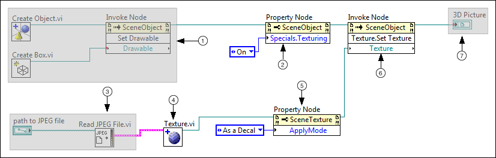

By default, new 3D objects have solid, single-colored surfaces. To change the appearance, you must apply a texture to the 3D object. A texture is a 2D image that you wrap around a 3D object.
Use the following block diagram objects to change the surface appearance of a 3D object:
Create the following block diagram to programmatically change the appearance of a 3D object.
Customize the gray sections for your unique programming goals.

 | Obtain a reference to the 3D object whose appearance you want to change. Your programming goals determine how you obtain this reference. The most common way to obtain a 3D object reference is to create a new 3D object. This example obtains a 3D object reference by creating a new 3D box. |
 | The Specials:Texturing property enables a 3D object to have a texture. If you do not set the Specials:Texturing property to On, you cannot apply texture to a 3D object. If the object to which you want to apply the texture is a child of another object, you can set the Specials:Texturing property to Inherit Value to inherit the texture settings of the parent object. |
 | Obtain LabVIEW image data that defines the texture you want to appear. Use one of the following ways to obtain LabVIEW image data:
- To convert a standard image format such as JPG to LabVIEW image data, use the appropriate Read VI from the Graphics Formats palette.
- To access an image that is part of a pre-existing 3D object, use a 3D picture control property or method.
- To define a custom image, create an image cluster.
This example uses the Read JPEG File VI to convert a JPG file to LabVIEW image data. |
 | The Texture VI converts the LabVIEW image data to a SceneTexture reference. You must convert image data to a SceneTexture reference so that you can interact with SceneTexture properties and methods to change the way that the texture appears on a 3D object. |
 | The Apply Mode property specifies how the texture appears on a 3D object. If you do not set the apply mode for the texture, LabVIEW applies the texture with blending, where the image data blends with the background color of the object. If you want the texture to retain the coloration of the original 2D image, set Apply Mode to As a Decal or As a replacement. This example uses the Apply Mode property of the texture to specify that the texture image appears with its original colors as a decal. |
 | The Texture:Set Texture method assigns a texture to the referenced 3D object. |
 | Use the SceneObject reference to display or manipulate the new 3D object. You can use this reference to achieve the following goals:
- To display the 3D object—Create a 3D picture control from the front panel and wire the reference to the associated block diagram terminal.
- To control the size and position of the 3D object—Wire the reference to one of the Transformation VIs.
- To add the object to multi-object 3D scene— Use the reference to create a 3D scene that contains multiple 3D objects.
- To interact with other attributes of the 3D object— Wire the reference to a SceneObject property or method. These properties and methods control attributes and behaviors of the 3D object, such as its color, light source, and texture.
This example displays the textured 3D object by using a 3D picture control. |
 Open example
Open example  Find related examples
Find related examples